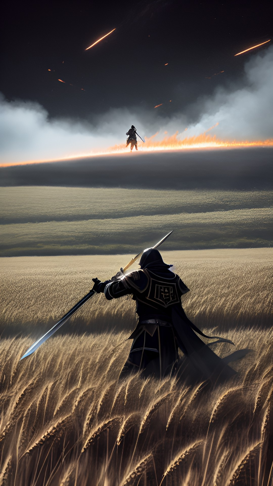

O encontro

Você chegou nas Terras Santas e vai a procura do imperador. Você descobre que ele está lhe esperando no campo do império, então vai até seu encontro. Chegando lá percebe o olhar orrendo daquele homem, dava pra sentir, mesmo de longe, que suas intenções eram das mais perversas possíveis.
Você está somente com uma lança na mão, o que faz?